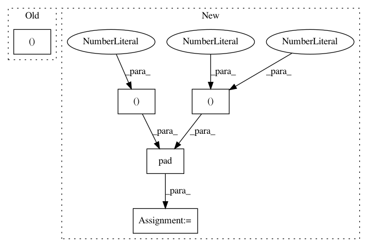

2ee8ac1546400645908b61ef015cdf5d71aa34cc,utils/datasets.py,,pad_to_square,#,20
Before Change
h, w = image_np.shape[:2]
dim_diff = np.abs(h - w)
pad1, pad2 = dim_diff // 2, dim_diff - dim_diff // 2
new_shape = (max([h, w]), max([h, w]), 3)
padded_image = np.full(new_shape, constant_value, dtype=np.float32)
if h < w:
padded_image[pad1 : pad1 + h, :] = image_np
padding = (0, pad1, 0, pad2)
After Change
// Upper (left) and lower (right) padding
pad1, pad2 = dim_diff // 2, dim_diff - dim_diff // 2
// Determine padding
pad = ((pad1, pad2), (0, 0), (0, 0)) if h <= w else ((0, 0), (pad1, pad2), (0, 0))
// Add padding
img = np.pad(img, pad, "constant", constant_values=127.5)
return img, pad
class ImageFolder(Dataset):
In pattern: SUPERPATTERN
Frequency: 3
Non-data size: 5
Instances
Project Name: eriklindernoren/PyTorch-YOLOv3
Commit Name: 2ee8ac1546400645908b61ef015cdf5d71aa34cc
Time: 2019-04-22
Author: eriklindernoren@live.se
File Name: utils/datasets.py
Class Name:
Method Name: pad_to_square
Project Name: maciejkula/spotlight
Commit Name: 396303a7b84fe4f8b304a5878c487ff0b3a16097
Time: 2017-07-08
Author: maciej.kula@gmail.com
File Name: spotlight/sequence/representations.py
Class Name: CNNNet
Method Name: user_representation
Project Name: librosa/librosa
Commit Name: f947b1479e76dbeee06400e8d97b23bf64d0c8ff
Time: 2013-11-21
Author: brm2132@columbia.edu
File Name: librosa/segment.py
Class Name:
Method Name: structure_feature